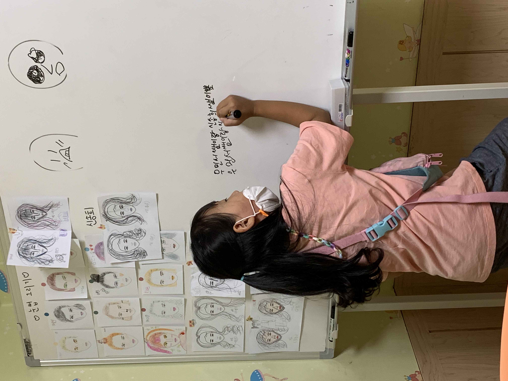

3. 목표
|  |
현재 제가 바라보고 있는 길은 교직이기 때문에, 열심히 교직 수업을 듣고 있습니다. 하지만 일반적인 교사가 아닌 학생들에게 더 많은 가르침과 도움을 주고 싶다는 생각에 전공 과목도 열심히 공부하고 노력하고 있습니다. 주전공에 대해 잘 알고, 아이들에게도 제가 배운 바를 정확하게 전달하는 교사가 되는 것이 저의 목표입니다. 목표를 이루기 위해 대학생활에서 어느 과목도 소홀하게 생각하지 않고, 꼼꼼히 공부하고 잊지 않기 위해 노력할 것입니다. |
|
그리고 대화나 발표를 할 때 전달력을 키우는 것이 목표입니다. 요즘 스스로 전달력이 부족하다는 생각이 들어, 유튜브 동영상이나 책을 보면서 잘 생각하고 말하는 연습과 수업 연습을 하고 있습니다. |